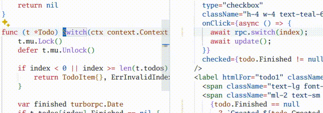

Combination of tRPC and net/rpc. Run Fast, Move Fast, Break Nothing.
Write Go methods, get a type safe client for your frontend.
Services are just Go objects with methods on the form func (s Service) Method(ctx context.Context, input Input)
(Output, error).
package main
import (
"context"
"net/http"
"sync/atomic"
"github.com/turborpc/turborpc"
)
type Counter atomic.Int64
func (c *Counter) Add(ctx context.Context, delta int64) (int64, error) {
return (*atomic.Int64)(c).Add(delta), nil
}
func main() {
rpc := turborpc.NewServer(turborpc.WithServerJavaScriptClient())
_ = rpc.Register(&Counter{})
http.Handle("/rpc", rpc)
http.HandleFunc("/", func(w http.ResponseWriter, r *http.Request) {
w.Write([]byte(`
<!DOCTYPE html>
<html>
<head>
<title>Counter</title>
<script src="/rpc"></script>
</head>
<body>
<strong id="count"></strong>
<button id="plus">+</button>
<button id="minus">-</button>
<script>
const rpc = new Counter("/rpc");
const setCount = (v) => document.getElementById("count").innerText = v;
document.getElementById("plus").onclick = () => rpc.add(1).then(setCount);
document.getElementById("minus").onclick = () => rpc.add(-1).then(setCount);
rpc.add(0).then(setCount);
</script>
</body>
`))
})
http.ListenAndServe(":3000", nil)
}